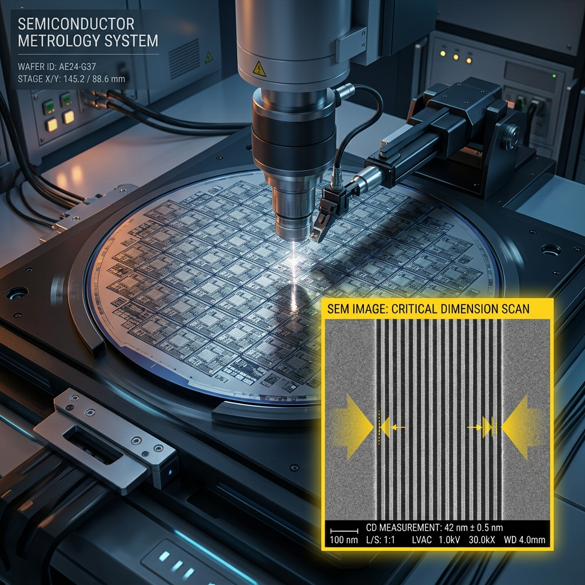
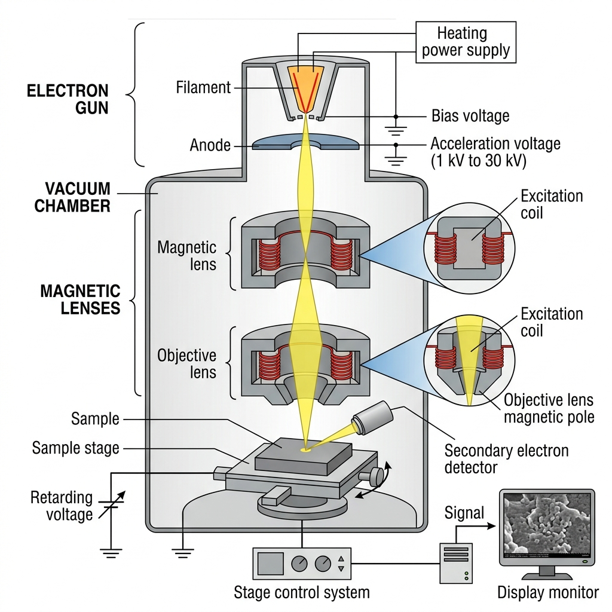
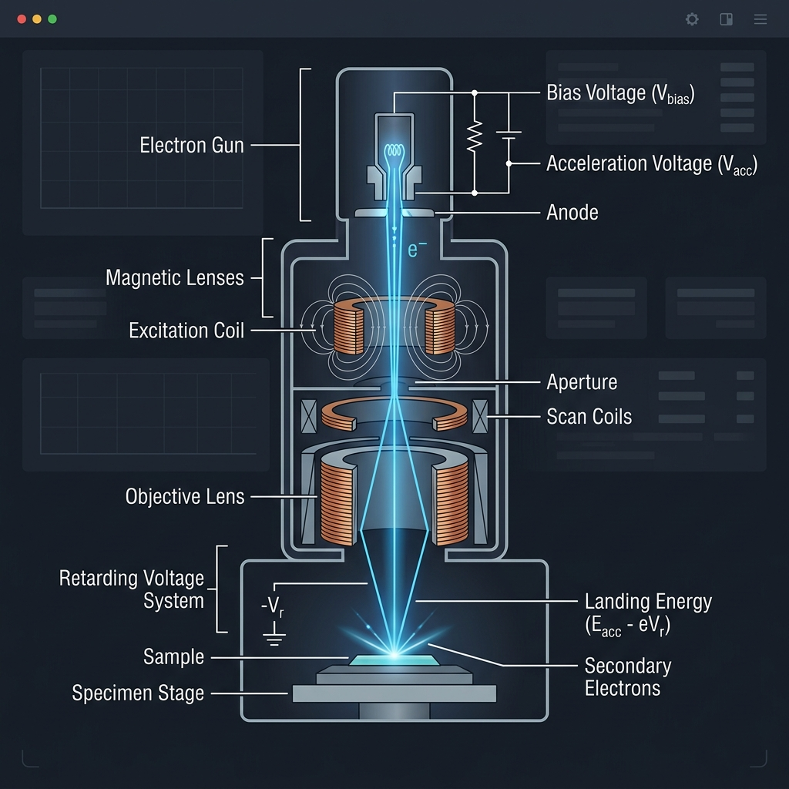
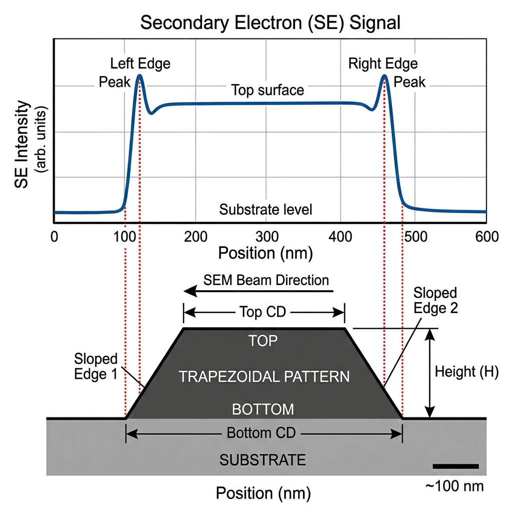

1. 시뮬레이션 기획 의도

반도체 미세 공정에서 CD-SEM 측정은 수율을 결정짓는 핵심 공정입니다.
본 시뮬레이터는 CD-SEM 기초학습을 위해 기획되었습니다.
2. CD-SEM 측정 원리 및 소재별 문제점/대처법
SEM 원리

전자빔을 이용하여 전자가 시편과 충돌할 때 발생하는 이차전자를 수집해 이미지로 구현
구동 원리

전자총에서 방출된 고에너지 전자빔이 자기 렌즈를 통해 미세하게 집속되어 시편 표면을 주사(Scan)합니다.
이때 시편과의 상호작용으로 방출되는 이차전자(SE)를 수집하여 각 지점의 신호 강도를 명암으로 변환함으로써 고해상도 이미지를 생성합니다.
Elanding ≈ e(Vacc - Vbias)
(Vacc: 가속 전압, Vbias: 리타딩 바이어스 전압)
Landing Energy가 전자빔의 투과 깊이와 시편 손상 정도를 결정하며, 소재 특성에 따라 최적의 파라미터 설정이 필수적입니다.
포토레지스트 (PR, 유기물) 특징 및 문제점
- 수축 (Shrinkage): 전자빔 노출 시 고분자 결합 붕괴로 선폭이 물리적으로 줄어듭니다. 초저전압(ULV) 및 낮은 전류(Dose) 적용이 필수입니다.
- 대전 (Charging): 부도체 표면에 전자가 축적되어 Blooming 현상이 발생합니다.
실리콘 (Si, 무기물) 특징 및 기기적 왜곡
실리콘은 물리적 수축은 없으나 장비 한계로 인한 파형 왜곡(CD Bias)이 크게 발생합니다.
- 신호 왜곡 (Signal Bloom): 엣지 신호가 실제 패턴 폭보다 넓게 검출되어 선폭을 과대평가하게 됩니다.
- 전자 산란 (Mode II): 선폭이 산란 범위(20~40nm)보다 작아지면 전자가 관통하여 파형 중심부 신호를 높입니다.
- 피크 병합 (Peak Merging): 패턴이 10nm 이하로 작아지면 좌우 엣지 피크가 하나로 뭉쳐지는 왜곡이 발생합니다.
- 비선형적 오차 폭증: 선폭이 얇아질수록 오차가 폭증하므로 이상적 빔 폭(5pA)과 Landing Energy(50eV) 설정이 필요합니다.
3. SE Waveform Profile 이란?

CD-SEM이 웨이퍼 표면을 스캔할 때 수집된 2차 전자의 신호 강도를 시각화한 프로파일입니다. 피크 지점이 실제 물리적 엣지에 해당하며, 이 데이터를 기반으로 선폭을 도출합니다.
참고 문헌 (References)
- [1] A.-L. Fabre et al., "Landing energy influence on CD-SEM measurement precision and accuracy," Proc. SPIE, 2006. [cite: 1, 16]
- [2] C. Shishido et al., "CD bias reduction in CD-SEM using model-based library method," Proc. SPIE, 2008.
- + Google Deep Research ▼